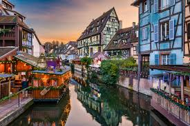
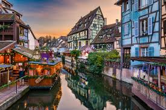
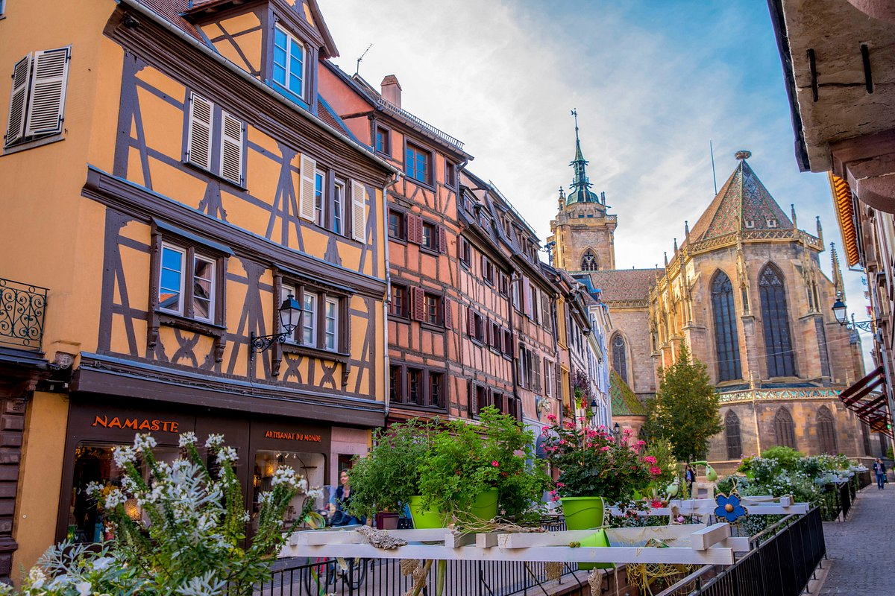
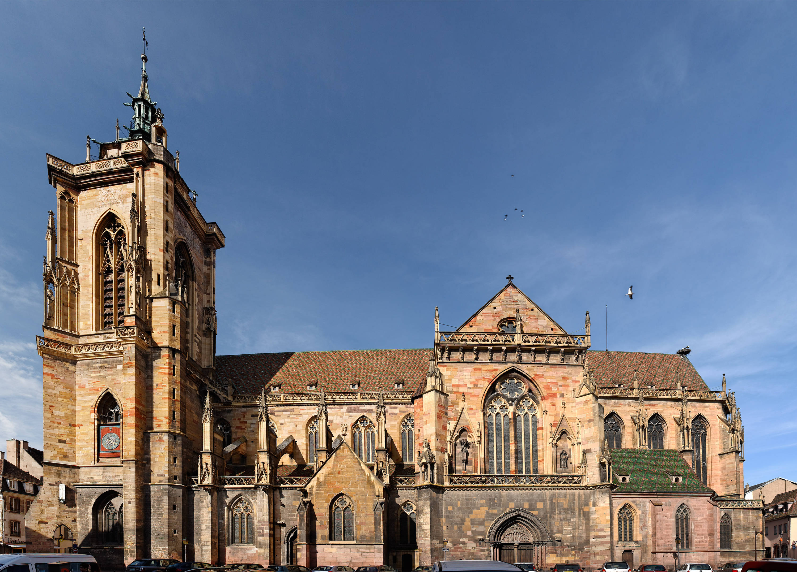
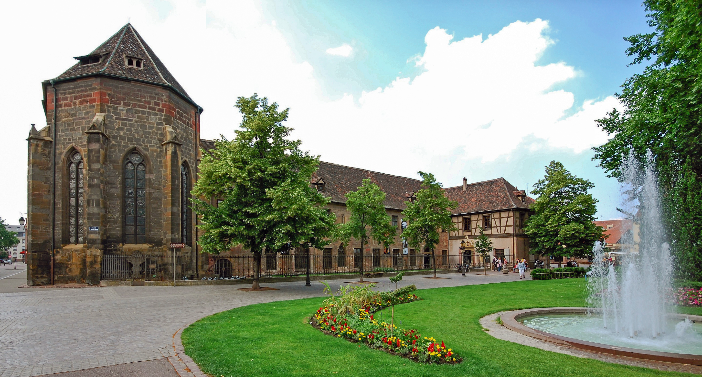

Colmar
Colmar est une ville pittoresque située dans le département du Haut-Rhin, en région Alsace. Elle est connue pour son architecture médiévale, ses canaux et ses vignobles environnants.
 

Patrimoine Historique et Culturel
- Vieille Ville : Colmar possède un centre historique bien préservé avec des maisons à colombages colorées et des rues pavées.
- Collégiale Saint-Martin : Un bel exemple d'architecture gothique datant du XIIIe siècle.
- Musée Unterlinden : Abrite le célèbre Retable d'Issenheim, une œuvre majeure de l'art médiéval et de la Renaissance.
- Musée Bartholdi : Dédié à Auguste Bartholdi, le sculpteur de la Statue de la Liberté, qui est né à Colmar.


